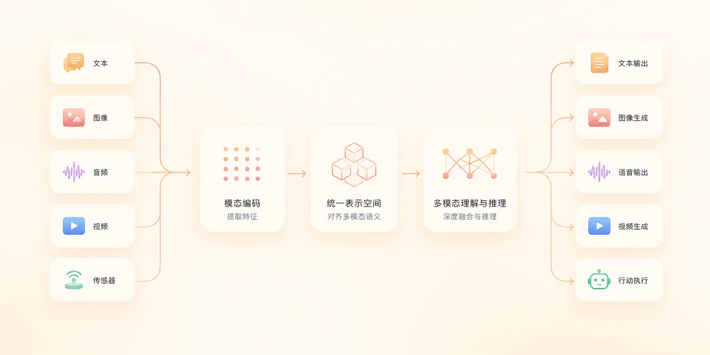

大模型多模态（Multimodal）
多模态（Multimodal）大模型让 AI 同时处理文本、图像、音频、视频等多种信息形式，是当前大模型最核心的发展方向之一。
本文从零开始讲解多模态的概念、发展过程、内部原理与典型能力，并在文末给出 5 分钟搭建第一个多模态应用 的可运行示例。
一、什么是多模态？
普通大模型通常只能处理一种信息——文本，如果给传统 AI 一张图片，并问它"图片里有几只猫？"，如果不支持多模态，该模型就做不到。
而现实世界不是由文字组成的，而是由多种感官信息共同构成：
| 感官 | 对应信息 |
|---|---|
| 眼睛 | 图像 |
| 耳朵 | 声音 |
| 嘴巴 | 语言 |
| 手 | 动作 |
| 视频 | 图像 + 时间 |
| 网页 | 文本 + 图片 + 结构 |
因此，多模态（Multimodal） 这一概念应运而生。
用一句话理解：
多模态 = 一个模型同时理解和生成多种信息形式。
看两个典型例子：
1、输入图片加问题："这张图里的食物热量高吗？"，模型回答："这是炸鸡和薯条，预计约 1200 大卡。"
-
2、输入语音："帮我总结这段会议"，模型输出文字摘要并附带行动建议。
这种看图说话、听音总结的能力，就是多模态最直接的体现。
二、什么是模态（Modal）？
模态（Modality）就是信息的表现形式。
不同的模态对应不同的输入与输出，下表列出常见模态及其典型应用：
| 模态 | 输入示例 | 输出示例 | 典型应用 |
|---|---|---|---|
| Text（文本） | 小说、聊天记录 | 回答、文章 | 问答、写作、翻译 |
| Image（图像） | 照片、截图 | 图片理解、生成图 | OCR、视觉问答 |
| Audio（音频） | 语音、音乐 | 转写文字、合成语音 | 会议摘要、语音助手 |
| Video（视频） | 视频流 | 视频分析、时间轴 | 教学总结、内容检索 |
| Sensor（传感器） | GPS、温度 | 控制信号 | 机器人、自动驾驶 |
| Action（动作） | 鼠标点击、键盘输入 | 执行动作 | GUI Agent、自动化 |
模型支持的模态越多，能力就越接近人，这也是为什么所有头部实验室都在把文字模型升级为多模态模型。

三、多模态大模型的发展过程
从只能处理文字，到能看、能听、能输出视频，多模态大模型经历了三个清晰的阶段。
第一阶段：语言模型（LLM）
这一阶段模型的输入和输出都是文字，代表产品包括 OpenAI GPT 系列、Anthropic Claude、Google Gemini。
它们能写代码、写文章、做翻译、回答问题，能力很强，但有一个根本限制：看不见。
第二阶段：视觉语言模型（VLM）
VLM 在 LLM 基础上增加了"看图"能力，典型用法是上传一张网页截图，问"为什么布局错了"，模型回答"CSS 冲突"。
这一阶段模型开始具备：图像理解、OCR、图表理解等能力。
第三阶段：原生多模态模型
原生多模态模型不再把"图"和"文"当作两个拼接的模块，而是从训练开始就统一处理图像、声音、视频、文本。
它具备完整能力：看、听、说、推理、执行，这也是当前业界的主流方向。
四、多模态模型内部是怎么工作的？
多模态模型的内部工作可以概括为一句话：把所有数据转成统一向量空间。
例如：
"一只猫"、"cat"、cat.png 三种表达，虽然来自不同模态，编码后在向量空间里会落在接近区域。
整体流程如下图所示：
上图展示了从输入到输出的完整链路，下面拆解每一步。
第一步：编码（Encoding）
不同模态要先转成数字，模型才能处理。
| 模态 | 原始数据 | 编码后 |
|---|---|---|
| 文本 | "你好" | [2034, 789] 一组 token id |
| 图像 | 像素矩阵 | 视觉特征向量 |
| 音频 | 波形 | 频谱特征向量 |
第二步：统一语义空间
编码后的关键一步，是让"猫"、"cat"、cat.png 在向量空间里彼此接近。
这就是"跨模态理解"的本质：把不同模态的特征投影到同一个空间里。
第三步：生成输出
在统一空间里推理之后，模型按需把结果"还原"成不同模态。
输出可以是：文本、图像、音频、视频中的任意一种。
例如：上传一张图片 → 描述 → 再生成一段介绍视频，这是完整的多模态生成链。
五、为什么 Transformer 能统一多模态？
核心原因只有一个：Attention 机制。
Transformer 的核心公式是 Attention(Q, K, V)，含义是"模型自己判断该关注什么"。
举个例子：当用户问"图片里谁在打篮球？"时，模型会：
- 先看图，识别出图中所有人物
- 识别出图中的篮球
- 判断"谁"和"篮球"之间的关系
- 综合上下文输出答案
这种"自主决定关注点"的能力，让 Transformer 天然适合处理多模态输入：
| 输入 | 模型在关注什么 |
|---|---|
| 纯文字 | 句子之间的语义关联 |
| 图片 + 文字 | 图像区域和文字描述的对应 |
| 视频 + 文字 | 时间轴片段和问题的关联 |
这也是为什么 Attention 几乎成了所有现代大模型的"标配"——它天生就是为跨模态设计的。
六、多模态典型能力
多模态模型具备五大典型能力，下图展示了它们之间的关系。
1. 图像理解
输入截图，模型输出页面问题、UI 分析或 OCR 结果。
程序员最常用的场景是：截图报错，让 AI 定位问题。
2. 图像生成
输入"生成未来城市"这样的文字描述，模型返回 AI 图片。
典型应用：海报、封面、游戏素材、产品草图。
3. 语音交互
说话即输入，模型实时回答，能力覆盖 ASR（语音转文字）、TTS（文字转语音）、对话。
4. 视频理解
上传一段教学视频，模型输出总结、时间轴、可问答的关键片段。
5. Agent 智能体
输入"帮我做 PPT"，模型开始执行完整行动链：搜索资料 → 生成大纲 → 制作幻灯片 → 修改 → 导出。
Agent 是把"看、听、说"和"动手执行"结合的最终形态。
七、初学者必须理解的五个术语
阅读多模态相关文档时，下表中的术语会反复出现，先记住它们：
| 术语 | 含义 | 举例 |
|---|---|---|
| Token（词元） | 模型处理的最小单位，文本按词切分 | "你好世界" → [你][好][世界] |
| Embedding（嵌入） | 把信息转成数字坐标的过程 | "猫" → [0.12, 0.78, 0.33, ...] |
| Context（上下文） | 当前对话的历史与背景信息 | 用户说"苹果"+"上下文：手机"= iPhone，而非水果 |
| Attention（注意力） | 决定模型关注输入哪一部分 | 看图时模型先看"人"再看"篮球" |
| Inference（推理） | 模型根据输入生成输出的过程 | 用户输入问题后，模型"思考并回答" |
这五个词贯穿所有大模型文档，先建立直觉，遇到细节再回查。
八、动手体验：5 分钟搭建你的第一个多模态应用
本节目标：上传一张图片，AI 输出文字描述。
整个流程不需要任何深度学习基础，只要会 Python 即可。
8.1 准备项目
先创建一个项目 multimodal-demo，并使用 openai 库来测试：
实例
mkdir multimodal-demo
# 进入项目目录
cd multimodal-demo
# 安装 OpenAI 官方 SDK（兼容多种多模态模型）
pip install openai
在 multimodal-demo 目录下上传一张图片 cat-cartoon.webp，图片如下（可以右击保存下来测试）：
8.2 编写调用代码
本实例采用的是节方舟的 Coding Plan，他们的 doubao-seed-2.0-pro 模型支持多模态。
把下面这段代码保存为 test.py：
实例
import os
from io import BytesIO
from openai import OpenAI
from PIL import Image
# ==================== 方舟配置 ====================
ARK_API_KEY = "ark-xxxx" # 这里填写你的 Key
ARK_BASE_URL = "https://ark.cn-beijing.volces.com/api/coding/v3" # 推荐使用通用 v3 接口
MODEL_ENDPOINT = "doubao-seed-2.0-pro" # 支持多模态的模型
# 初始化客户端
client = OpenAI(
api_key=ARK_API_KEY,
base_url=ARK_BASE_URL,
timeout=60
)
def prepare_image_base64(image_path: str, max_size: int = 1024) -> str:
"""
读取本地图片，处理透明通道，缩放并转换为 base64 字符串
"""
if not os.path.exists(image_path):
raise FileNotFoundError(f"找不到测试图片: {image_path}")
with Image.open(image_path) as img:
# 1. 处理 RGBA 透明背景
if img.mode == "RGBA":
background = Image.new("RGB", img.size, (255, 255, 255))
background.paste(img, mask=img.split()[-1])
img = background
elif img.mode != "RGB":
img = img.convert("RGB")
# 2. 等比例缩放（防大图撑爆 Payload/Token）
img.thumbnail((max_size, max_size))
# 3. 转 Base64
buf = BytesIO()
img.save(buf, format="JPEG", quality=85) # 适当压缩质量
b64 = base64.b64encode(buf.getvalue()).decode("utf-8")
return f"data:image/jpeg;base64,{b64}"
def multimodal_chat(img_path: str, prompt: str):
"""多模态对话测试"""
try:
print(f"正在处理图片: {img_path} ...")
img_b64 = prepare_image_base64(img_path)
print("正在发送请求至火山引擎方舟平台...")
res = client.chat.completions.create(
model=MODEL_ENDPOINT,
messages=[
{
"role": "user",
"content": [
{"type": "text", "text": prompt},
{"type": "image_url", "image_url": {"url": img_b64}}
]
}
],
temperature=0.7,
max_tokens=1024
)
print("\n" + "="*10 + " 识别结果 " + "="*10)
print(res.choices[0].message.content)
print("="*30)
return res
except FileNotFoundError as e:
print(f"【错误】{e}")
except Exception as e:
print(f"【API 请求失败】请检查网络或 Endpoint/Key 是否正确。错误信息:\n{e}")
return None
if __name__ == "__main__":
# 测试配置
image_file = "./cat-cartoon.webp"
question = "详细描述这张图片里的内容，分析画面主体、色彩和场景"
# 模拟创建一个临时测试图（若本地没有相应图片，方便快速肉眼 debug）
if not os.path.exists(image_file):
print(f"未检测到 {image_file}，正在生成一张临时测试图...")
Image.new('RGB', (200, 200), color = (73, 109, 137)).save(image_file)
multimodal_chat(image_file, question)
运行 Pyhton，输出结果如下：
在发送请求至火山引擎方舟平台... ========== 识别结果 ========== 这是一张**Q版萌系卡通风格的数字角色插画**，整体背景为纯净的纯白色，没有任何环境元素，所有视觉重心都集中在中心的小猫主体上，是典型的独立角色立绘/吉祥物设计。 --- ### 一、画面主体详细描述 主体是一只端正坐姿的卡通幼橘猫，是经过萌化设计的家养橘白虎斑猫形象，整体气质乖巧天真、亲人友好： 1. **比例与姿态**：采用萌系设计特有的大头短身比例，头部占整体高度的60%左右， ...
打开浏览器控制台，就能看到模型对图片的文字描述。整个链路是：
用户上传图片 → 浏览器把图片 URL 传给 OpenAI SDK → 多模态模型理解图片 → 返回文字描述 → 打印到控制台。
8.3 常见扩展
完成上面这段最小可运行代码后，你可以继续扩展：
| 想做什么 | 怎么改 |
|---|---|
| 改成上传本地文件 | 用户上传图片后读取后转为 base64，再赋给 image_file |
| 支持连续多轮对话 | 把历史问答追加到 messages 数组 |
| 换成其它厂商模型 | 构造 OpenAI 客户端时指定 baseURL，如 Qwen、OpenAI、Anthropic 兼容端点 |
| 处理语音 | 把 type: "image_url" 换成 type: "input_audio"，并提供 base64 音频 |
九、学习路线（推荐）
如果你刚接触大模型，下图是一条经过验证的 6 周学习路径。
十、未来会发生什么？
回顾软件形态的演变，可以看到清晰的趋势：
过去：软件 = 功能。
现在：软件 = 模型。
未来：软件 = 多模态智能体。
这意味着未来用户只需说一句话，例如"做个网站"，模型就会自动完成设计、编码、部署、运营的全流程。
多模态并不是"给模型加一个看图功能"那么简单。
它真正改变的是：
让计算机开始直接理解现实世界。
这正是当前 AI 行业最重要的范式转变，也是所有开发者值得投入的方向。
常见问题
多模态模型和普通 LLM 哪个更好用？
取决于场景：纯文本写作、代码生成、翻译，普通 LLM 性价比更高；需要看图、听音频、理解视频时，多模态模型是唯一选择。
本地能跑多模态模型吗？
可以，但成本较高。小参数 VLM（如 Qwen2-VL-7B）可在 16GB 显存的消费级显卡上运行；更大模型通常需要云端 GPU 或调用 API。
多模态模型的输出一定是文字吗？
不一定。原生多模态模型可以输出文字、图像、音频甚至视频；纯 VLM 通常只输出文字。
如何选择多模态 API？
如果只做图像理解：OpenAI gpt-4o、Gemini 2.5 Flash、Qwen2-VL 都是性价比高的选择；如果要"看 + 听 + 实时语音"，建议直接使用 OpenAI Realtime API 或 Gemini Live。

点我分享笔记